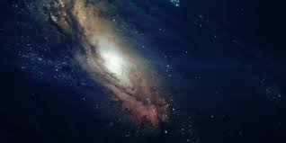

Teoría: Estado Estacionario

¿Qué dice esta teoría?
La teoría del estado estacionario propone que el universo no tiene un inicio ni un final. Según esta idea, el universo siempre ha existido y siempre tendrá una apariencia similar a gran escala.
Aunque el universo se expande, esta teoría sugiere que constantemente se crea nueva materia en el espacio vacío. Esto permite que el universo mantenga una densidad constante a lo largo del tiempo.
Evidencia científica
En su momento, esta teoría intentó explicar la expansión del universo sin necesidad de un evento inicial como el Big Bang. Fue considerada seriamente por algunos científicos durante el siglo XX.
Sin embargo, con el descubrimiento de la radiación cósmica de fondo, la mayoría de los científicos dejaron de apoyarla, ya que esta evidencia favorece el modelo del Big Bang.
Pregunta abierta
Si el universo realmente crea materia constantemente, ¿qué mecanismo físico permitiría este proceso? Actualmente no existe una explicación comprobada para esto.
Por esta razón, hoy en día esta teoría no es ampliamente aceptada.